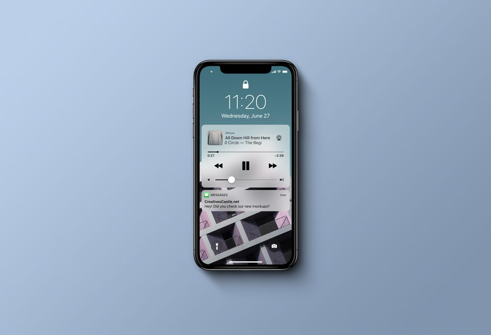

Centro Cultural Brasileiro
Descrição do projeto
O CCB é uma escola de português localizada em Guayaquil, Equador. Atualmente sou editor da página de Facebook e trabalhei na criação do funil de vendas da empresa.
Este projeto de Web Design consiste na modernização do antigo site, deixando-o mais moderno, responsivo e funcional.
O objetivo principal deste novo site é captar dados de potenciais clientes e segmentá-los por disponibilidade de horário e localidade, para realização de campanhas de vendas futuras. O formulário de contato é integrado com um serviço de gestão de campanhas de e-mail marketing.
O site poderá ser visto em breve em www.centroculturalbrasileiro.com.ec
Voltar ao portfólio